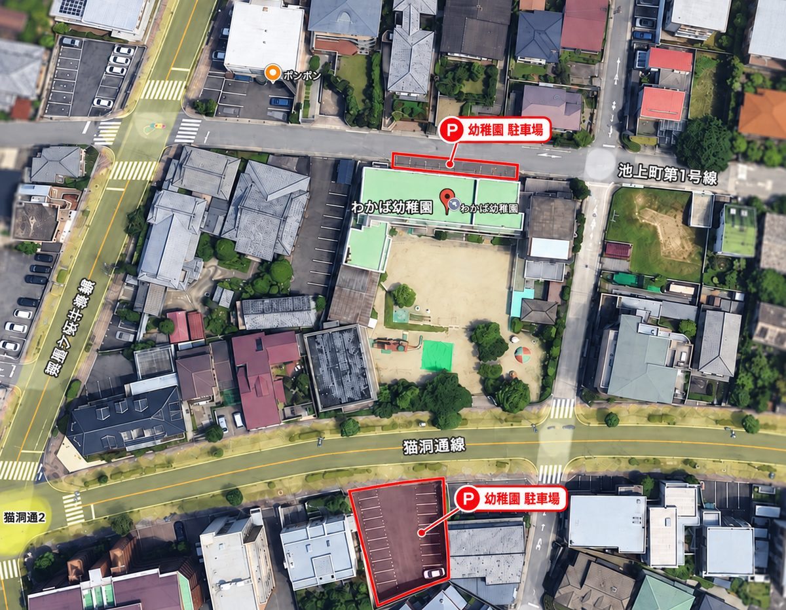

よくある質問
入園をご検討の方からよくいただく質問をまとめました
見つかりませんでした
ほかの言葉でさがすか、お気軽にお電話でお問い合わせください。
保育・子育て支援
Q給食はありますか？
A
月曜日はお弁当、火曜日から金曜日は園内調理の給食です。食物アレルギーのあるお子さんには、対応した特別食をご用意しています。
弁当・給食のページへ →Q預かり保育はありますか？
A
通常保育終了後、17時まで在園児のみを対象にお預かりしています。夏休みなどの長期休暇中は、日数・時間が異なります。
預かり保育のページへ →Q満3歳児保育はありますか？
A
あります。満3歳のお誕生日を迎えた翌月から入園でき、幼児教育無償化の対象です。
満3歳児保育のページへ →Q未就園児向けの教室はありますか？
A
2歳児向けのプレスクール「Green」があります。母子分離で、週に数回から通えます。
Greenのページへ →Q0〜1歳の小さい子でも遊びに行けますか？
A
0歳〜就園前のお子さまと保護者の方を対象にした「親子ひろば」や「園庭開放」があります。
親子ひろば・園庭開放のページへ →入園・転入
Q見学はできますか？
A
随時対応しています。お気軽にお問い合わせください。
入園案内のページへ →Q制服はありますか？
A
ありません。私服で登園後、遊び着を着ます。（気候に合わせて着用を決めています。）
Q入園時にオムツがとれていないといけませんか？
A
そういうことはありません。ですが、6月から水遊びをします。オムツがとれていると一緒にプールに入れます。
Q転入はできますか？
A
定員に空きがあれば随時可能です。お電話でお問い合わせください。
Q転入の際、園指定の用品でないと駄目ですか？
A
使えるものはお持ちのもの（前園で使用のもの）を使っていただいて構いません。
通園・アクセス
Qアクセス・駐車場は？
A
地下鉄東山線 本山駅から徒歩13分です。駐車場は園の北側敷地内と、南側道路向かいにあります。

Q園バスはありますか？
A
ありません。毎日送迎の時に、担任と顔を合わせるので質問、伝えたいことがあれば話すことができます。お子さんも幼稚園で遊ぶ時間が確保でき、送迎の際にはお子さんとのコミュニケーションをとることが出来ます。
この他にご不明な点は、お気軽にどうぞ

学校法人わかば学園わかば幼稚園
〒464-0032 名古屋市千種区猫洞通2丁目13番地
見学は随時受け付けています。
お電話でのお問い合わせ052-782-3651受付時間 平日 9:00〜15:00